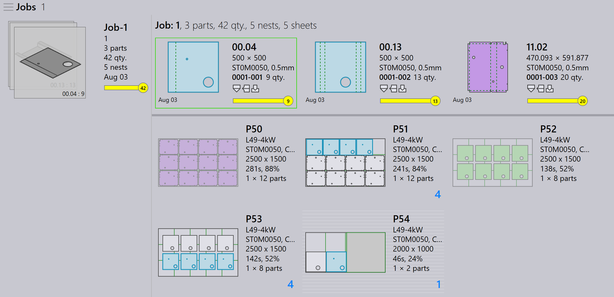

Αυτόματη διαχείριση υπολειμμάτων
Ενεργοποίηση υπολείμματος
Το TruSmartCAM υποστηρίζει την αυτοματοποιημένη δημιουργία μεταλλικών πλακών υπολειμμάτων από μια διάταξη κατά την κατανομή. Αυτή η λειτουργία είναι διαθέσιμη μόνο με μηχανές TecZone Laser.
-
Κάντε κλικ στο factory → Machines → Machine Defaults → Skeleton cuts.
-
Επιλέξτε την επιλογή Slice Sheet Skeleton & Create Remainder Sheet για να ενεργοποιήσετε αυτή τη λειτουργία.
Όταν είναι ενεργοποιημένη, η υπόλοιπη περιοχή μιας κατανεμημένης μεταλλικής πλάκας τεμαχίζεται σε μεταλλικές πλάκες υπολειμμάτων βάσει της εκχωρημένης Ελάχιστης τιμής μεταλλικής πλάκας υπολείμματος σε X & Y.

Διαμόρφωση αυτόματου υπολείμματος
-
Κάντε κλικ στο factory → Settings → Job.
-
Επιλέξτε Update sheet inventory on nest (un)release και Automate remnant inventory management.

Αυτόματο υπόλειμμα
Όταν κατανέμετε εξαρτήματα, εάν η περισσευόμενη περιοχή της μεταλλικής πλάκας πληροί την Ελάχιστη τιμή μεταλλικής πλάκας X & Y, το TruSmartCAM δημιουργεί αυτόματα μια Μεταλλική πλάκα υπολείμματος από τον περισσευόμενο χώρο.
-
Στην προβολή Κατανομής εργασίας, οι κατανομές που έχουν μεταλλικές πλάκες υπολειμμάτων εμφανίζονται με πράσινο περίγραμμα και γκρι φόντο.

-
Κάντε διπλό κλικ στην κατανομή για να ανοίξετε τη σελίδα Λεπτομερειών κατανομής. Οι πληροφορίες μεταλλικής πλάκας υπολείμματος εμφανίζονται με το μέγεθος, την ποσότητα και την περιοχή της μεταλλικής πλάκας υπολείμματος.
-
Κάντε δεξί κλικ στην κατανομή και επιλέξτε Edit για να την ανοίξετε στο TecZone. Η κατανομή εμφανίζει γραμμές τεμαχισμού μεταξύ των εξαρτημάτων και γραμμές τεμαχισμού σκελετού μαζί με τις διαστάσεις του υπολείμματος χαραγμένες. (Υλικό, Πάχος και Μέγεθος υπολείμματος).
Η χάραξη της διάστασης του υπολείμματος βοηθά τον χειριστή να επιλέξει τη μεταλλική πλάκα χωρίς μέτρηση, διευκολύνοντας τη χρήση της σε μελλοντικές κατανομές.
Όταν κάνετε κλικ στο Mark Complete, η μεταλλική πλάκα υπολείμματος εμφανίζεται με πράσινο σημάδι επιλογής, υποδεικνύοντας ότι η κατανομή έχει ολοκληρωθεί. Ένα μερικώς σκιασμένο τετράγωνο εικονίδιο υποδεικνύει ότι η μεταλλική πλάκα υπολείμματος έχει δημιουργηθεί και ενημερωθεί στο απόθεμα μεταλλικών πλακών.

Η βάση δεδομένων μεταλλικών πλακών ενημερώνεται με το μέγεθος και την ποσότητα της μεταλλικής πλάκας υπολείμματος, η οποία αναγνωρίζεται με σύμβολο αστερίσκου (*) στο τέλος του μεγέθους μεταλλικής πλάκας. Οι μεταλλικές πλάκες υπολειμμάτων έχουν πράσινο περίγραμμα.

Ο αυτόματος σχεδιασμός ή ο διαδραστικός σχεδιασμός μιας εργασίας θεωρεί τις μεταλλικές πλάκες υπολειμμάτων ως υψηλής προτεραιότητας στο σχέδιο κατανομής, διασφαλίζοντας ότι χρησιμοποιούνται πρώτες για να διατηρείται ο χώρος παραγωγής ελεύθερος από αχρησιμοποίητα υπολείμματα.